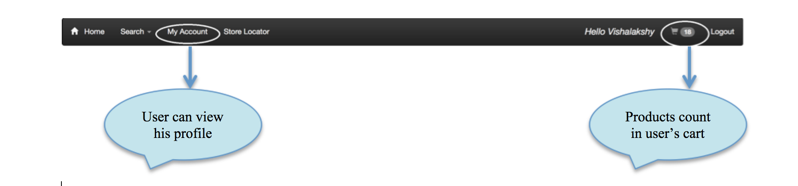
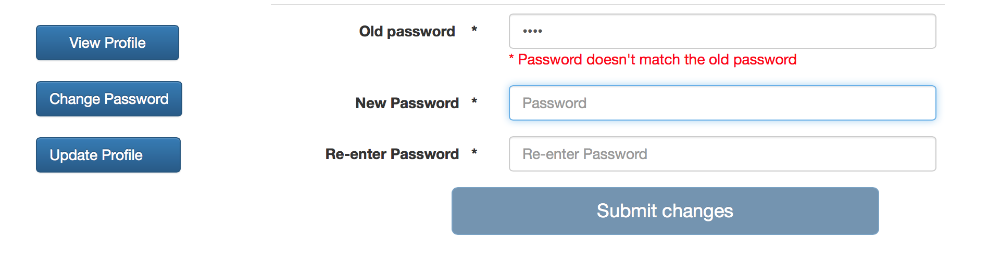
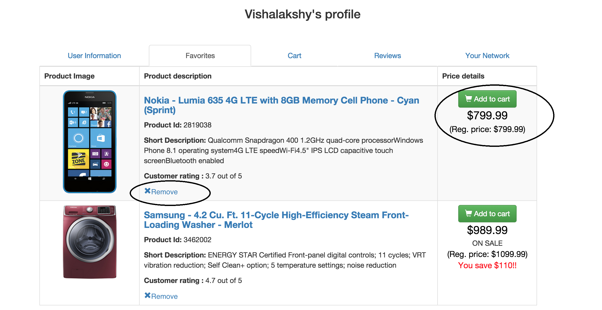
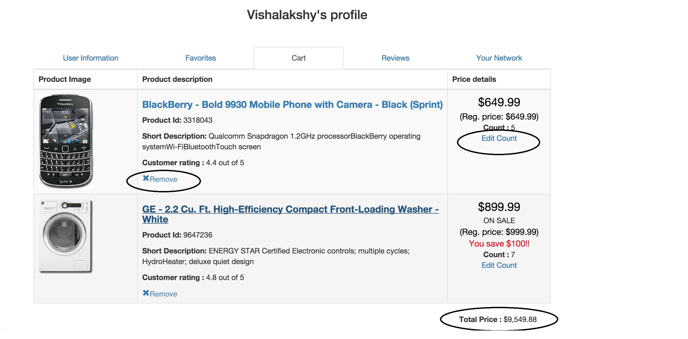
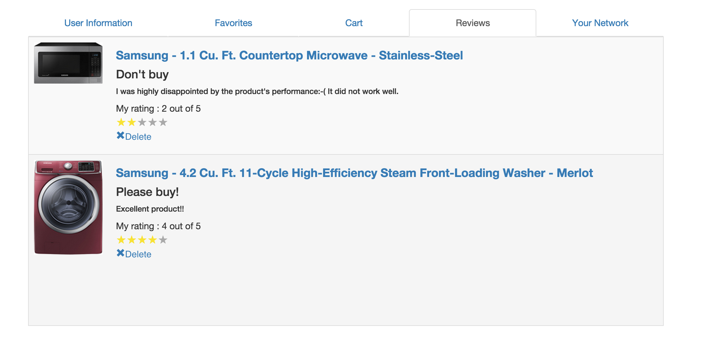

User profile Page
The user profile page is the important page of this application as it carries all information like the user's personal
details, favorite products list, cart list, user's reviews and the people this user follows and people who follows this user.
When a user logs in, the home page menu bar will display the number of items in the user's cart. Everytime the user adds a product
to his cart, this count will get updated.

Managing user's personal details :
The user can manage his personal details by editing his information like First name, last name, address and phone number.
The user can also change his password by providing his old password as a proof of authentication. If the given password
doesn't match with the current password, error will be thrown as follows :

Managing user's favorites:
The user can add any product to his favorite by clicking 'Add to favorites' button. When clicks this button he will be
redirected to the Favorites tab under his profile showing the currently added product. The user can remove any product from
his favorite's list by clicking the 'Remove' link. The user can also add favorites products to his cart by clicking
'Add to Cart' button.

Managing user's Cart:
The user can add any product to his cart by clicking 'Add to cart' button from any page. When clicks this button he will be
redirected to the Cart tab under his profile showing the currently added product. The user can remove any product from
his cart by clicking the 'Remove' link. The user can also remove product from his cart by updating the count to 0. The user
can update the product count by clicking edit count link. Accordingly the count shown on the menu bar will get updated. The total
price of all the products in the cart is displayed at the bottom.

Managing user's Reviews:
The user can review any product by clicking 'Add review' in product details page. When user submits the review, the review
will be added both for the product as well as the user. All the reviews the user has written so far can be found under 'Reviews'
tab in his profile page. The user can remove the reviews he has written by clicking the 'Remove' link. When a review is removed,
it will be removed both from the product as well as the user's reviews list.

Technologies used :
- HTML5
- CSS3
- Bootstrap
- AngularJS
- Node.js
- MongoDB